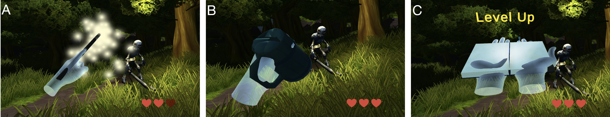

Demo Video
Example Applications
Given the expressiveness of human hands, Hand Interfaces offers virtually infinite possible designs and applications. We've implemented a few example application scenarios below.
Education
In educational scenarios, students can use Hand Interfaces to quickly and easily retrieve tools that facilitate their learning experiences. In this circuit example, a student raises up two index fingers to retrieve Multimeter probes to measure voltage of an important circuit component (A). After the measurement, the student uses the Pen to write down a note (B). Finally, the student takes a photo of the entire set up using the Camera (C).
Entertainment
Hand Interfaces can also be easily applied in entertainment applications. In a magic fighting game, players retrieve wands once the Wand gesture is performed (A). By waving their wands (index fingers) following specific trajectories, players can cast different spells as tactics to win the fight. After taking some hits, a player can retrieve a healing potion by performing a Mug gesture and use the potion by "drinking" from the mug (B). Players can also retrieve other tools, for example, a Book, and check their level status by opening the book (C).
Ubiquitous Computing

Finally, Hand Interfaces is directly applicable to AR scenarios, in which many applications demand hand-free interactions so that users can quickly switch between their tasks in the physical world and in the digital world. In this example, a user with a pair of AR glasses can turn a smart lighting system on and off with the Toggle switch (C). Then the user controls the orientation of the light with the Joystick (D). Finally, the user retrieves a spherical Color palette imitated by a fist gesture to adjust the light color (E).